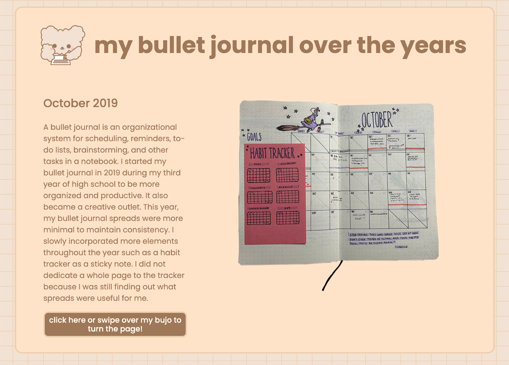

Introduction
Summary
Based on this usability test, I found that the most pressing issue is the mouse interaction. Users felt confusion on how the mouse interaction function and used the alternative interaction to navigate the website. Having text that explained how the interaction functions more clearly or including some sort of response when the action has been completed would fix this issue.
Users
I conducted my usability test with Kelly and Vanessa. They fit the target audience of my project because my target audience uses a bullet journal or have an interest in bullet journaling. Both users have experience with bullet journal and are more likely to look at my website.
User One: Kelly
- Age: 22 years old
- Gender: Female
- Education:
- UC Davis
- 4th year
- Design major
- Bullet journal: Yes!
User Two: Vanessa
- Age: 21 years old
- Gender: Female
- Education:
- UC Davis
- 4th year
- Data Science major
- Bullet journal: Yes!
Tasks
For the usability of my project, I want to focus on improving the mouse interactions of my website. In my usability test, the main task I asked users to do was to look through all the pages of the website. This allowed me to observe if users make use of the mouse interactions and how easily they were able to utilize it.
Results
Bugs
Throughout the usability test, I noticed that the user interactions function and they should. I did not notice any bugs or broken parts of the experience.
Usability Problems
- Users tried to press and swipe over images
- Users hover over the image randomly
- Users had trouble noticing the page had changed
- Users did not notice when the task has been completed
Other Feedback
- Users relied on the button more than the swipe feature
Post-Test Questions
After the usability test, I asked post-test questions about what they liked and disliked about the experience. I was told that they liked that there was only one main interaction but disliked that they could not go back to a page if they wanted to. I also received feedback about how the text is a bit overwhelming and it would be helpful if it was broken into shorter paragraphs.